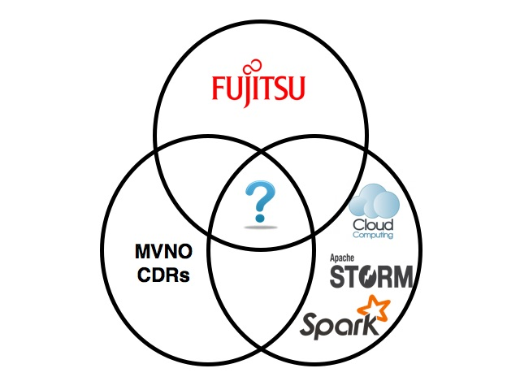
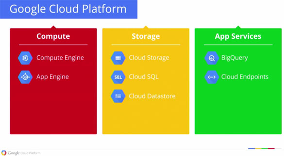
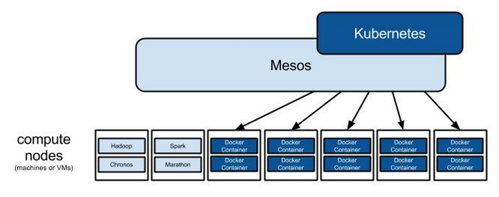
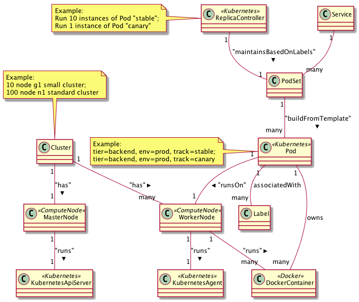

Spark on K8s
(First :)) Reactive Programming Meetup - Dublin - June 2015
Created by roland@tritsch.org / @innolocity
NodeJs on K8s
(First :)) Reactive Programming Meetup - Dublin - June 2015
Created by roland@tritsch.org / @innolocity
Today
- Reactive programming
- Immutable deployments
- Google Container Engine (Kubernetes)
- NodeJs on K8s
About the Roland 
About the Roland
Reactive Programming

Reactive Programming
- Reactive Programming!!!
- Reactive Infrastructure??? - Software Dev Platform (Code, Unit-Test, Code-Review, , Software Deployment Platform (Packaging, System/Load-Test, ...), Runtime (Monitoring, Alarming, Logging, ...), Feedback Platform (A/B test, Performance/Through-put, Was it a good change?, ...)
- Reactive Organisations???
Immutable Deployments
Immutable Deployments

Immutable Deployments
Immutable Deployments
- Insprired by functional programming concepts (Talk by Rich Hickey)
- About Snowflakes and Phonixes
- By now ... mainstream! Netflix, Gilt, Zalando, Wunderlist, ...
- Works well with MicroServices
Google Container Engine (Kubernetes)
Google Container Engine (Kubernetes)
Google Container Engine (Kubernetes)

Google Container Engine (Kubernetes)

Google Container Engine (Kubernetes)
Google Container Engine (Kubernetes)
- Concepts: Cluster, Node (master/worker), Pod, Service, ..., Replication Controller, ...
- GCE vs. Mesos vs. Openstack vs. ... - Resources (CPU, Mem, Disk, Network), Assets (Services, Applications, ...)
NodeJs on k8s
- Hello, World vs. Hello, Meetup
- DEMO - Upgrade a running cluster to the next better version of a NodeJs server implementation
NodeJs on k8s - DEMO
What to consider?
- Do not build it yourself!!!
- AWS, Google Cloud, RackSpace, Heroku, ...
- Bamboo, snap-ci, ...
- Netflix, Zalando, Gilt, Etsy, ...